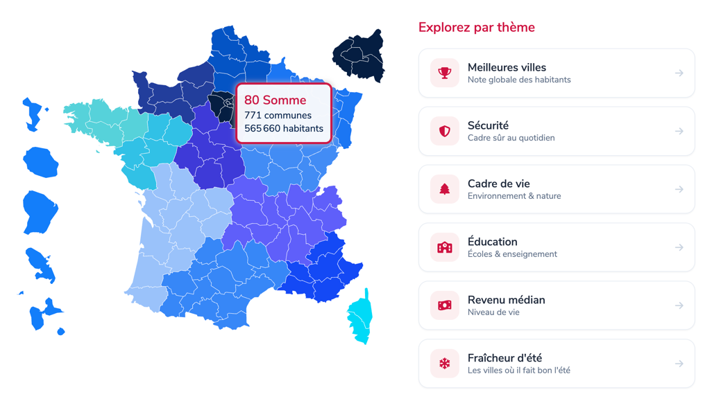
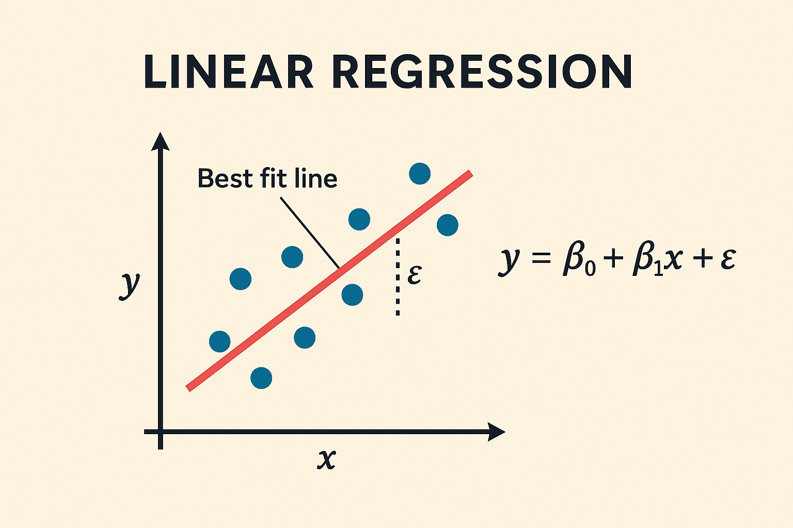
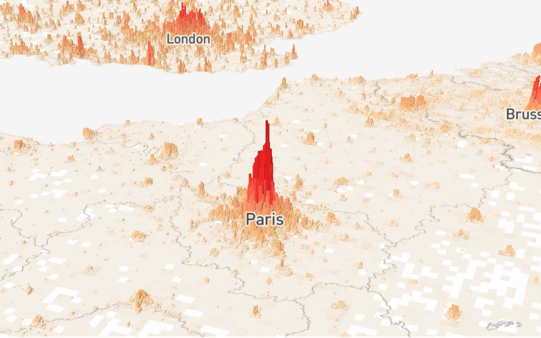
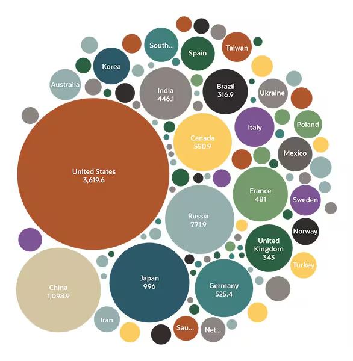
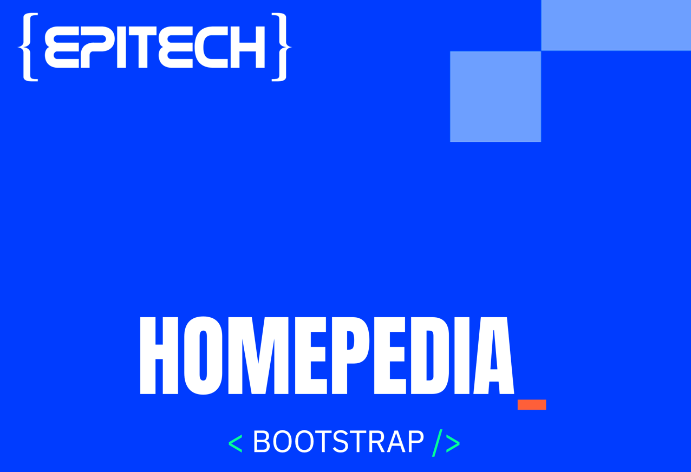

In this project, you will use DataOps to build a powerful decision-support tool for the property market, moving far beyond a standard real-estate listings website.
Through data collection, processing, and analysis, you will create an interactive platform that explains the territory.
Your main users won’t be people looking for housing. They will be real
estate firms, local governments, data analysts from big companies…
Your app will help them do their job, which is to find answers to big
questions like :
- “How can I reduce inequality in my department”
- “What are the risks of investing in this lot caused by global warming at a 15
years horizon”
- “Where should the next 10 franchises of my company be located?”
Ultimately, your platform will turn complex data into user-friendly, actionable territory intelligence.
"Which towns are falling behind the national average the fastest?"
"Which areas combine rising prices and rising exposure to natural disasters?"
"Where to open a gym: density, income, median age, competition?"
"Which areas are becoming attractive before prices rise?"
"Where is rental yield highest for a given budget?"
"Which towns offer the best access to healthcare per euro of housing?"
A few references for the kind of experience, visualization, or analysis you can aim for.

Villes à vivre — explore any commune by theme
Some variables worth cross-referencing with price — and where real data for each can be found.
| Explanatory variable | Example source | Where to find it |
|---|---|---|
| Real-estate prices (the core) | DVF sale transactions | data.gouv.fr ↗ |
| Economy | GDP/capita, unemployment, income | insee.fr ↗ |
| Demography | Population, age, boundaries | geo.api.gouv.fr ↗ |
| Health & services | Access to care | data.ameli.fr ↗ |
| Building & energy | Energy label (DPE) | data.ademe.fr ↗ |
| Climate | Temperature history since 1940 | open-meteo.com ↗ |
| Natural risk | Disaster declarations by commune | georisques.gouv.fr ↗ |
| Society | Elections, tourism, and more | data.gouv.fr ↗ |

Present your results through a highly interactive, customizable app that lets users navigate and select what they want to explore—from specific areas to global indicators—across city, department, and region levels.
Your app must integrate cartographic analysis, allowing users to visualize trends on bubble, isoline, choropleth, heat, route, or connection maps.


Picking the right way to represent your data is as important as building it, as one of the trickiest parts of the analysis process is choosing the correct chart or map while avoiding chartjunk.
What to avoid: decoration that adds no information.
wikipedia.orgBrowse chart types by use case.
anychart.comA searchable catalogue of visualization types.
datavizcatalogue.comFind the right chart for your data, with caveats.
data-to-viz.comAnother comprehensive chart-type reference.
datavizproject.com Big Data means data whose Volume, Variety
and Velocity are high enough to require dedicated tools and methods to turn into value.
Make use of advanced tools
and methods in order to extract valuable insights from the huge amount of data. To tackle the immense
volume of data involved in this project, you have to use technologies for fast and efficient data
processing, such as Hadoop and Spark. By creating a
cluster of machines, you will distribute the workload across multiple nodes,
significantly reducing processing time and enabling parallel data processing.
While the primary focus lies in collecting
and analyzing vast amounts of data, there is a crucial role for artificial intelligence to play.
Textual data, such as comments describing the quality or shortcomings of a city, can be efficiently processed and
analyzed using AI techniques, to extract valuable information such as sentiment analysis.
At least one of your sources should be a textual one. This type of data mustn't be simply mapped to its source or presented as a list of comments, but it should be processed in a way that makes it usable.
Open data isn't the same as merely accessible data — check the licence, read the terms of use, and throttle your requests. Document your sourcing choices, even for an academic project.
For each API you use, document which one it was, what data you retrieved from it, and for what purpose.
To provide a comprehensive understanding of your project's foundation, include a well-defined schema of your database(s), along with a meticulous description of your data-cleaning methodology.
If AI algorithms are utilized within the project, it is essential to provide a detailed account of their implementation and functionality.
Other countries' markets
Online deployment
Authentication & accounts
Hardened security
Real-time updates
Admin view · guided tour
